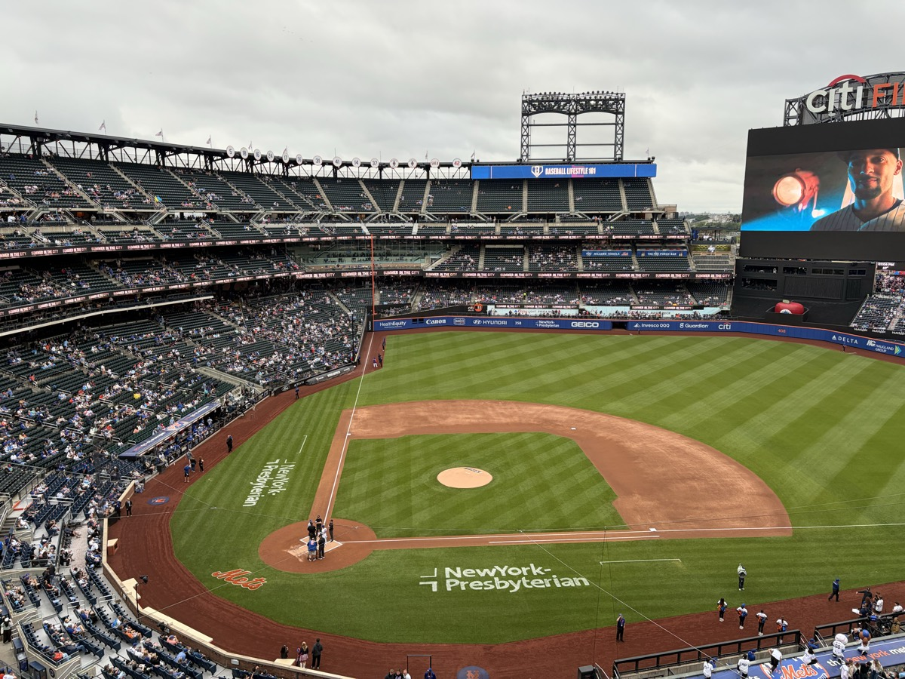
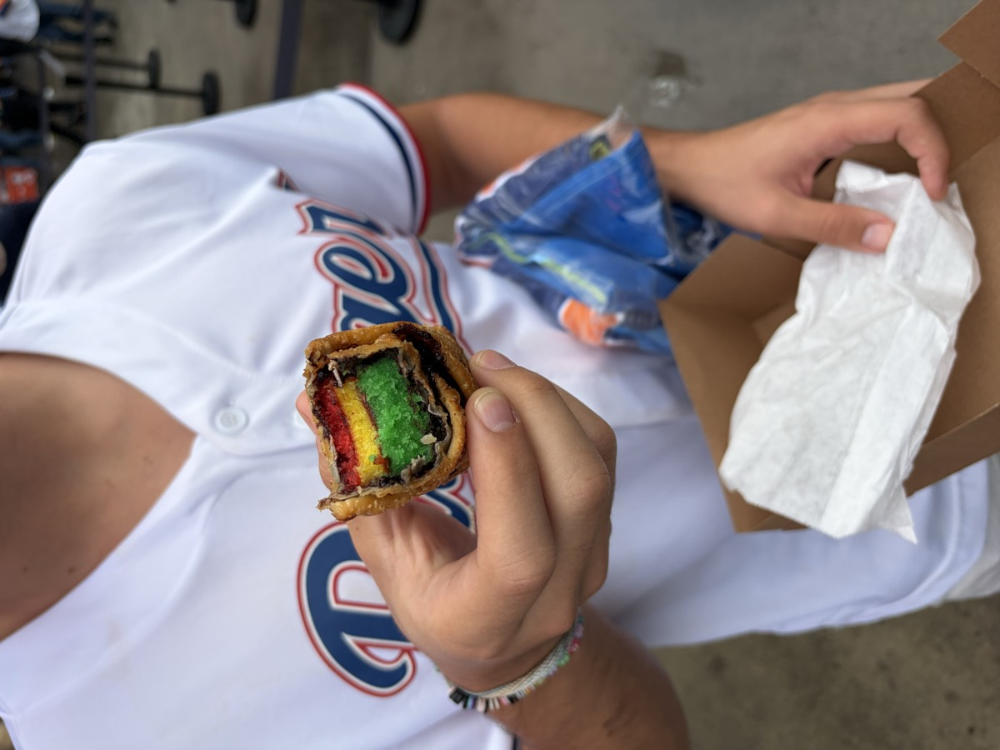

Concept 14 — Pinterest Masonry Feed
Endless discovery · photos and tips interleaved, filter to explore
New York, NY
Madison Square Garden
Home of New York Knicks ·
Snapback 9.2
· Fan 8.7 (214)
Curated by Jack Settleman
✓
Filter
All
Seats
Food
Vibe
Getting in
100 Level
Center 200s beat behind the basket, even down low.
Steak Sandwich · Sec 107
The best food in the whole building — get it outside 107.
Jack Settleman
✓
“
Best crowd in the NBA. Be ready to stand.
Atmosphere
▲
63
▼
Outside
Walk, subway, LIRR or NJ Transit — driving is my last choice.
Jack Settleman
✓
“
Skip the pizza. It is bad in the arena.
Food
▲
28
▼
300 Level
The Hyundai Bridge is a cool spot and good value.
Tip-off
Tight seats, but the energy is worth every inch.
Jack Settleman
✓
“
Delta Club is all-inclusive food and drink.
Seats
▲
19
▼
Garden Market
Best basic food in sports — that bun is fantastic.
Jack Settleman
✓
“
100-level gates: way shorter merch line than the lobby.
Getting in
▲
31
▼
Gates
Come in through the 100 level gates.

400 Level
Even up top, the sightlines wrap you into the game.

Burgers
Carnegie Deli is another good one.
Jack Settleman
✓
“
Plenty of in-game fun — the t-shirt tosses go off.
Atmosphere
▲
24
▼
Chase Lounge
Reserve the Chase lounge for a calm pregame.
Jack Settleman
✓
“
Alcoholic drinks are very expensive inside MSG.
Insider
▲
26
▼
 100 Level
100 Level Steak Sandwich · Sec 107
Steak Sandwich · Sec 107 Outside
Outside 300 Level
300 Level Tip-off
Tip-off Garden Market
Garden Market Gates
Gates Chase Lounge
Chase Lounge